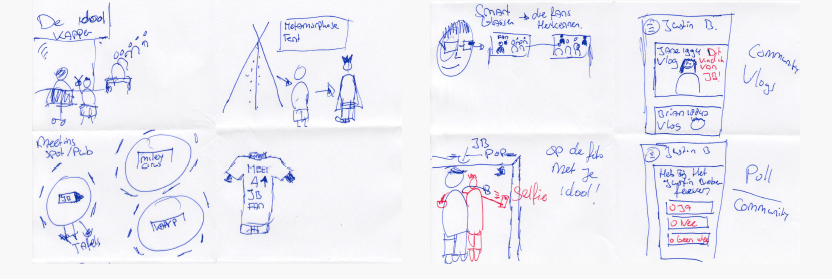
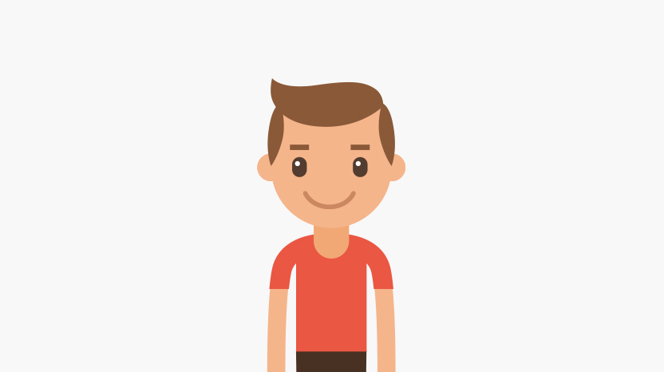
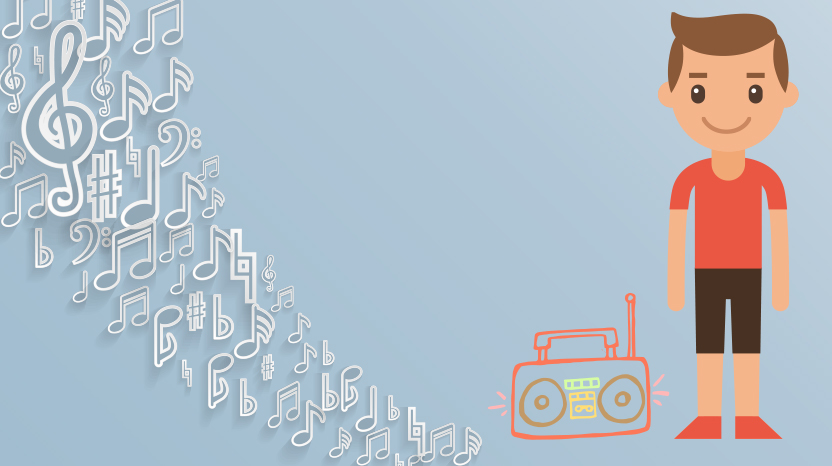
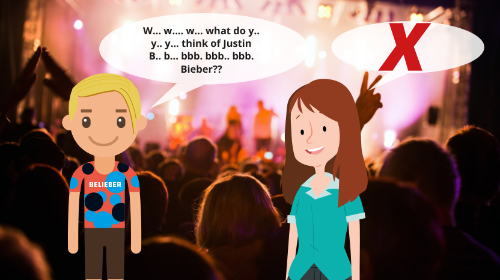
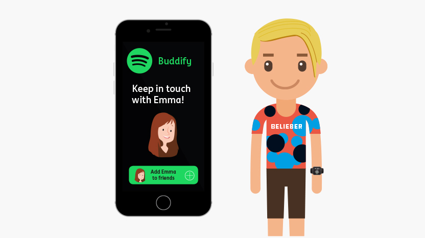
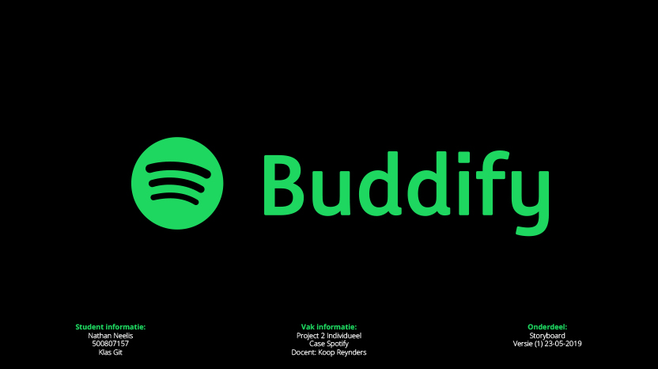

Mijn laatste project dit jaar. Ik heb gekozen om voor de case: Spotify. In deze case gaan we een experience ontwikkelen voor Spotify op een evenement. De bedoeling is dat we een interactief digitaal component ontwikkelen met een fysiek component. De experience is voor de muziekfreak zodat deze doelgroep een extra dienst krijgen die aan hun wensen voldoet.
Dit project is op het moment dat ik over dit project schrijf nog niet afgerond. Maar ik ben al enorm enthousiast over mijn proces en mijn concept dat ik dit toch alvast in mijn portfolio opneem!
Muziekfreak
Om te beginnen met deze case ben ik gaan onderzoeken wie nou die muziekfreak is. Hier heb ik een persona bij gemaakt, deze heet Jake. Jake is een muziekfreak en in mijn geval een belieber. De definitie van mijn muziekfreak is dat het iemand is die helemaal gek is van een idool. Een belieber is hier een perfect voorbeeld van.
Proces
Dit project zit in hetzelfde blok als dat New Product Development zit. Nu ik al zo bezig ben geweest met al de onderzoeksmethode's heb ik besloten deze ook toe te passen voor dit project. Zo heb ik de fases: Verkennen, definiëren, idee generatie en conceptualiseren opnieuw toegepast in dit project. Nu ik deze methode's voor de tweede keer toepas gaat dit een stuk vlotter en krijg ik al vlot resultaten om verder te gaan naar het bouwen van mijn concept. In de afbeelding hieronder zie je de methode Crazy 8 om ideeën te genereren.

Het concept

Dit is Jake. Jake representeert in dit storyboard mijn doelgroep.

Jake luisterd veel naar de muziek van Justin Bieber. Er gaat geen dag voorbij dat hij niet naar zijn muziek luisterd!
Jake is zelfs zo'n grote fan van Justin Bieber dat hij graag zijn levenstijl imiteert. Hij heeft tegenwoordig hetzelfde kapsel en draagt dezelfde kleding.
Maar naar de muziek van Justin luisteren is niet genoeg. Jake heeft een duidelijke mening en deelt deze graag op het forum voor beliebers. Ook voert hij vaak discussies op dit forum met de andere beliebers.
Wanneer er weer een festival is waar Justin optreed moet Jake daar natuurlijk bij zijn!

Op het festival wil Jake graag andere beliebers leren kennen. Maar hij vindt het eng om andere mensen aan te spreken. Als hij dit dan toch probeert eindigt dit vaak in een hoop gestotter en geen resultaat.
Ik introduceer Buddify. Buddify bestaat uit een app waar je kan discuseren met fans op het forum en vlogs maken en delen. Ook kan je buddies worden en wordt je op de hoogte gehouden van je buddie beliebers.
Op de app gebruik je de functie "buddify me" en zo wordt je gematched met een mede belieber om zo in contact te komen.
Op je bracelet krijg je een kompas te zien. Je volgt de groene pijl richting je match. Op dezelfde tijd loopt de match ook richting jouw. Wanneer je in de buurt komt krijgt je bracelet dezelfde kleur als je match en zie je zijn of haar profiel foto. Zo weet je wie je ontmoet en kan je elkaar herkennen.
Jake ontmoet hier zijn match Els. Dit keer is het niet zo sociaal awkward en ontstaat er een leuk gesprek over Justin Bieber.

Na afloop worden Jake en Els buddies en worden ze op de hoogte gehouden van elkaars activiteiten in de buddify app.

Buddify de app die de muziekfreak bij elkaar brengt!
Test het prototype
Benieuwd hoe de app verder is ontwikkeld? Test hier de eerste versie van het prototype!